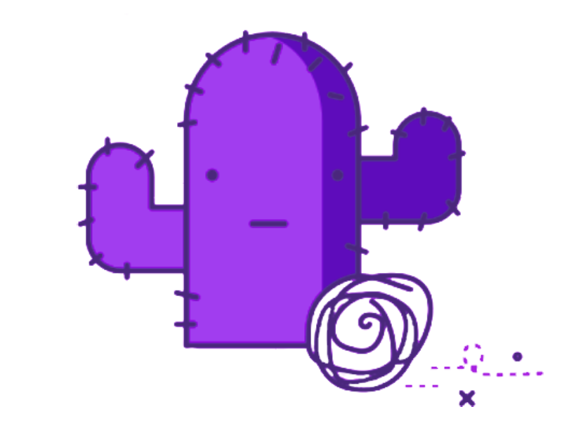

<ion-content>
  <div class="help-type">
    <ion-button shape="round" [ngClass]="{ 'active' : active === 'FOOD' }" (click)="active !== 'FOOD' ? getHelpEvent('FOOD') : null">
      <ion-icon slot="start" name="restaurant"></ion-icon>
      Food
    </ion-button>
    <ion-button shape="round" [ngClass]="{ 'active' : active === 'WATER' }" (click)="active !== 'WATER' ? getHelpEvent('WATER') : null">
      <ion-icon slot="start" name="water"></ion-icon>
      Water
    </ion-button>
    <ion-button shape="round" [ngClass]="{ 'active' : active === 'CLOTHING' }" (click)="active !== 'CLOTHING' ? getHelpEvent('CLOTHING') : null">
      <ion-icon slot="start" name="shirt"></ion-icon>
      Clothing
    </ion-button>
    <ion-button shape="round" [ngClass]="{ 'active' : active === 'SERVICES' }" (click)="active !== 'SERVICES' ? getHelpEvent('SERVICES') : null">
      <ion-icon slot="start" name="construct"></ion-icon>
      Services
    </ion-button>
  </div>
  <div class="vertical-list-wrapper ion-padding">
    <div class="vertical-list-header" *ngIf="!isLoading && help.length > 0">
      <h4 class="vertical-list-title">For you</h4>
    </div>
    <div class="vertical-list-content">
      <ng-container *ngIf="!isLoading; else loadingCards">
        <ng-container *ngIf="help.length > 0; else noEventsToShow">
          <ng-container *ngFor="let item of help">
            <vertical-cards (click)="openEvent(item.eventCode)" [event]="item" class="ion-activatable"></vertical-cards>
          </ng-container>
        </ng-container>

        <ng-template #noEventsToShow>
          <div style="background-color: #8469c726;display: flex;flex-direction: column;align-items: center;padding-bottom: 20px;border-radius: 10px; position: relative;text-align: center;" >
            
            <div >
              <h4>Oh snap!</h4>
              <p>No events near you. Try to search<br>with a different location.</p>
            </div>
          </div>
        </ng-template>
      </ng-container>

      <ng-template #loadingCards>
        <vertical-cards [isLoading]="true" class="ion-activatable"></vertical-cards>
      </ng-template>

      <ion-button fill="clear" *ngIf="!isLoading && helpTotal > help.length" (click)="loadMore()">
        <ion-icon slot="start" name="chevron-down-outline"></ion-icon>
        Load more
      </ion-button>
    </div>
  </div>
</ion-content>
